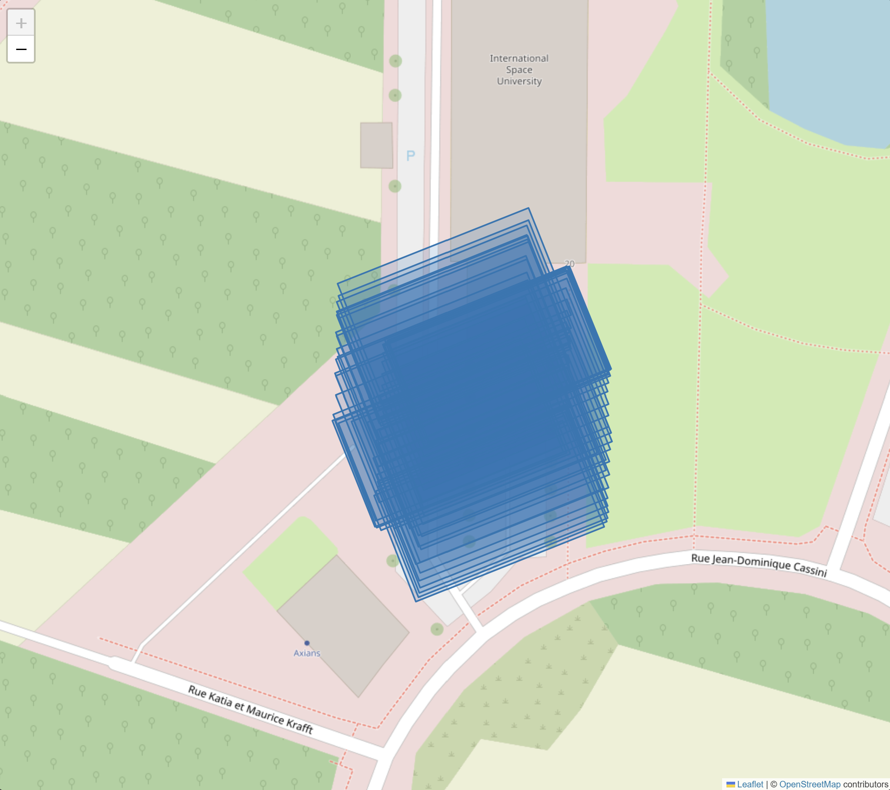
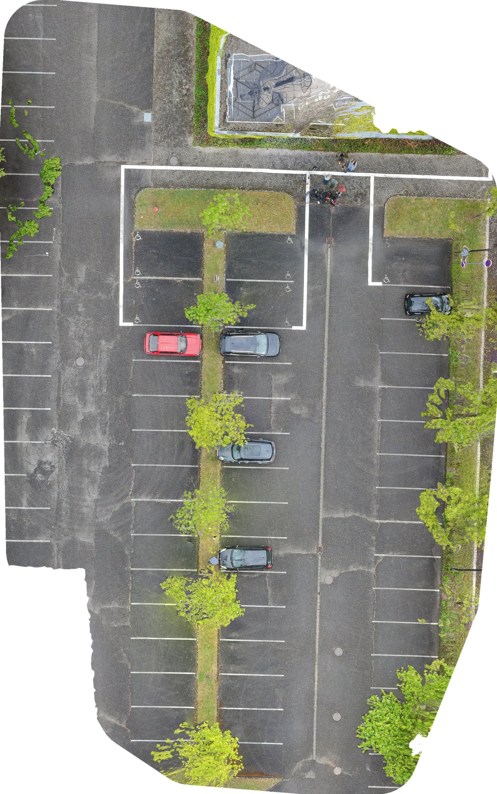
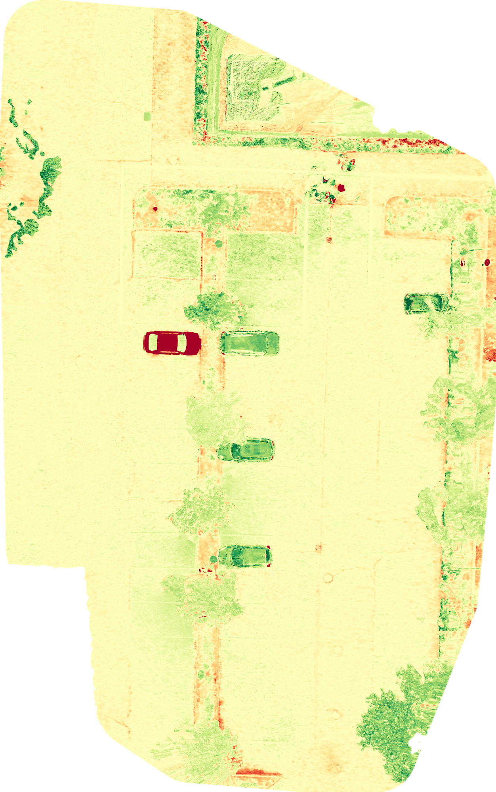
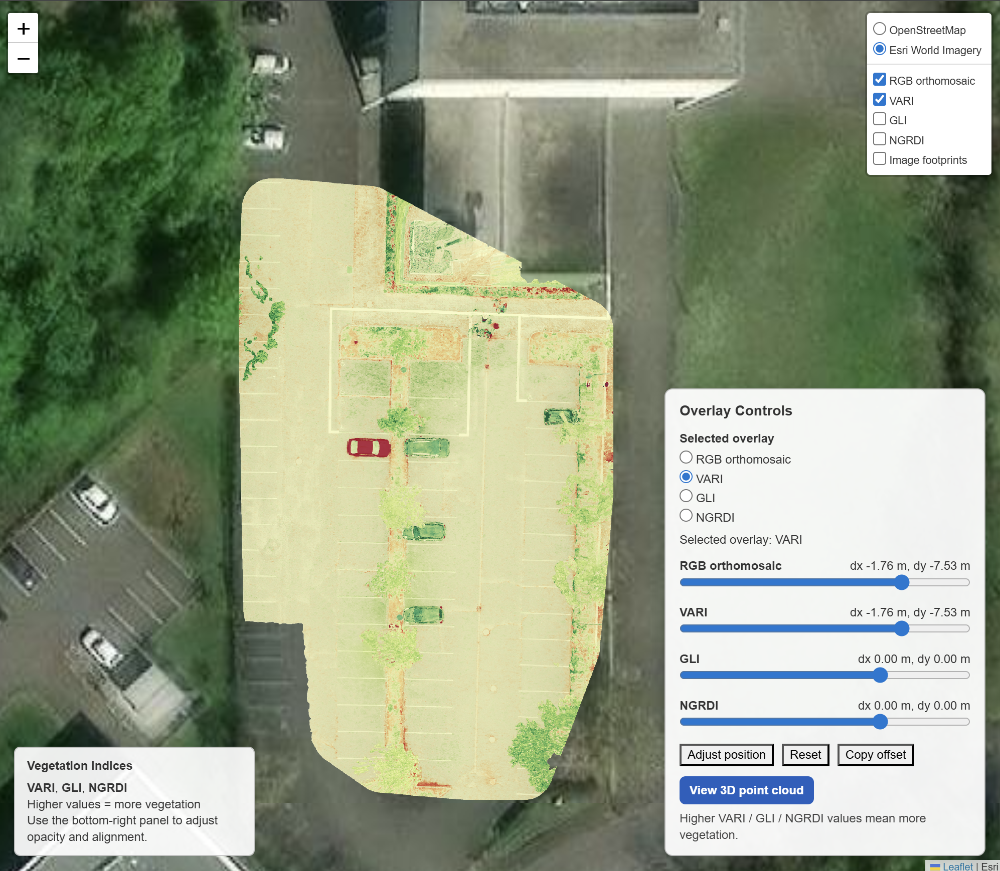
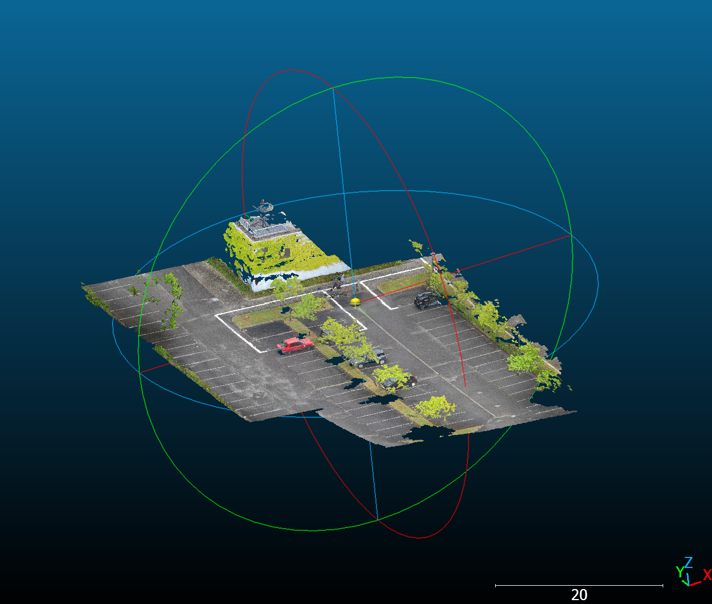
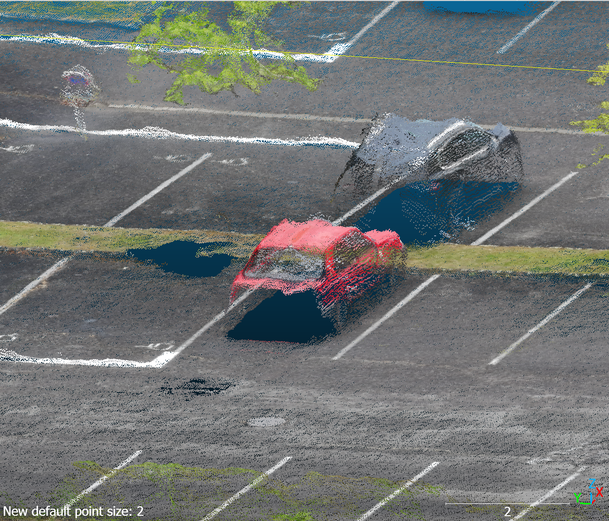

01Why this project
The Rwanda and Terroir projects in this portfolio both run inside Google Earth Engine, on satellite data someone else acquired. This one was the inverse: a complete EO methods stack from raw sensor capture through final product, on a dataset I helped acquire myself. The point was to demonstrate the methodology end-to-end — metadata extraction, geometric reconstruction, vegetation analysis, and deployment — rather than to produce a survey-grade deliverable.
The second point was to put the AI-orchestrated workflow on the record honestly. Codex wrote the code; I designed the pipeline, authored the AGENTS.md scaffold the agent worked against, crafted the prompts per stage, and verified each deliverable. The framing matters because the labour is genuinely split that way in 2026, and pretending otherwise would misrepresent the work.
02Pipeline — six escalating-fidelity stages
Each stage produces a checkable deliverable; earlier stages stay usable as sanity checks after later ones land. The naive Stage-3 mosaic was deliberately retained as a teaching artifact showing why proper SfM is needed.

- Metadata extraction. ExifTool via
pyexiftool, pulling DJI XMP fields (gimbal yaw/pitch/roll, relative altitude, absolute altitude) alongside standard EXIF. Output:metadata.{json, csv, md}with one record per frame plus dataset-level stats. - Per-image georeferencing. First-order projection in EPSG:32632 (UTM 32N). GSD from sensor width, altitude, and focal length; image footprint sized to
GSD × image_dim; gimbal-yaw applied as a rotation. Output: one GeoTIFF per frame and a singlefootprints.geojson. - Naive mosaic (baseline).
rasterio.mergewith last-write-wins. Visible seams and parallax artefacts — the point being to show what proper SfM has to fix. - OpenDroneMap reconstruction. Dockerised ODM (OpenSfM + OpenMVS internally). Output: 2 cm/pixel orthomosaic, DSM, and a 4.5 million-point colored point cloud as LAZ.
- Vegetation indices. Three RGB-only indices computed pixel-wise from the orthomosaic — VARI, GLI, NGRDI — exported as single-band Float32 GeoTIFFs in EPSG:32632, colour-mapped on
RdYlGnover [−0.3, +0.3]. VARI > 0.1 measured 4.8% vegetation coverage, matching visual inspection. - Interactive web viewer. Single-file Folium/Leaflet 2D map combined with a separate three.js + loaders.gl 3D point cloud page, both deployed as static HTML on GitHub Pages.


RdYlGn over [−0.3, +0.3]. The central planted strip and perimeter trees light up in green; the red car correctly classifies as non-vegetation. VARI > 0.1 measured 4.8% vegetation coverage. VARI and NGRDI produced near-identical maps; GLI was slightly more sensitive to mixed pixels.03The interactive 2D viewer
The 2D viewer (live link) combines OpenStreetMap and Esri World Imagery basemaps with five toggleable overlays — RGB orthomosaic, VARI, GLI, NGRDI, and image footprints — each with its own opacity slider.
The non-standard feature is a manual georeferencing correction tool. With the DJI Neo lacking RTK GNSS, the orthomosaic lands ~8 m off the satellite basemap (multipath from the adjacent ISU building). The viewer exposes that offset as a user-adjustable degree of freedom: drag any visible overlay against the basemap, and a live readout reports the current correction in metres in EPSG:32632. A Copy offset button copies the value as a JSON snippet for reproducible re-application. The bias measured here: dx ≈ −0.9 m, dy ≈ −7.8 m.
This isn't a substitute for proper Ground Control Points or a QGIS Georeferencer workflow — it's the interactive equivalent of an order-of-magnitude check. But it turns a limitation into a measurement, which is the right pedagogical move.

dx −0.92 m, dy −7.79 m — quantifies the consumer-GPS error rather than hiding it.04The 3D point cloud viewer

The 3D viewer (live link) renders all 4,561,726 points in the browser using three.js (BufferGeometry + Points + vertex colours, OrbitControls for navigation) and decodes the LAZ via @loaders.gl/las with the LAS/LAZ WebAssembly loader. First-load is ~5–15 s on broadband to fetch and decode the 15 MB compressed cloud; orbit and zoom run smoothly on commodity hardware afterwards.
Three technical details are worth surfacing because they're the kind of thing that breaks silently if not handled deliberately:
- Float32 precision at UTM magnitudes. Raw UTM coordinates around Strasbourg (~3.9×10⁵ E, ~5.4×10⁶ N) exceed Float32's ~7-digit mantissa, costing ~0.5 m of precision per axis on the GPU. The cloud is recentered server-side (centroid subtracted) before publishing, so the in-browser attribute keeps sub-millimetre precision and renders cleanly instead of as a black screen of jittered points.
- LAS format compatibility. OpenDroneMap exports LAS 1.4, point format 7. The
loaders.glLAS/LAZ reader caps at LAS 1.3.laspyconverts to LAS 1.2 / format 3 before publication. - Color decoding. The LAS spec stores RGB as 16-bit fields, but ODM populates them with already-8-bit values. The decoder is matched to the actual byte range (0–255 → 0–1) rather than the spec range (0–65535 → 0–1), which would otherwise have produced a near-black cloud.

05The AGENTS.md scaffold and AI orchestration
Before any code was written, I authored an AGENTS.md document defining the work the agent had to deliver. Each pipeline stage was declared as a contract: input, output, tooling, acceptance criterion. The document also fixed coding conventions (Python 3.10+, type hints on public functions, pathlib.Path for filesystem work, idempotent stages, explicit EPSG codes), lists external system dependencies and their install commands, and sets working rules for the agent — for example, "verify DJI tag names against exiftool -G -a -s output rather than guessing", and "tests before features for math-heavy code".
Codex executed against that document. The human role across the six stages was:
- Architecture. Choosing the three-tier escalation (pure-Python baseline → Dockerised ODM → optional COLMAP) and deciding which deliverables had to survive into the final repo.
- Prompt engineering. Decomposing each stage into prompts the agent could execute against without round-tripping for clarification.
- Verification. Sanity-checking GSD math against hand-computed values, cross-checking DJI XMP tag names against ExifTool output, confirming that the orthomosaic and point cloud rendered visually correct before publishing.
- Cross-stack debugging. The three breakage modes documented above (Float32 precision, LAS-version mismatch, RGB byte range) were all surfaced by inspection — the agent did not catch them autonomously, and the fixes had to be specified and verified by hand.
The honest framing: this is a 2026 workflow. Recognising where the human labour actually sits — architecture, contracts, verification, debugging the gap between what an agent generates and what production needs — is the skill the project is meant to evidence, alongside the EO methodology itself.
06Headline numbers
07Honest limitations
Stating these explicitly because they bound what the deliverables can be used for:
- Small dataset. 47 frames is on the low end for SfM. Survey-style flights typically carry 80–200+ images at 70–80% overlap. The reconstruction is recognisable and metric but noisier than a proper grid flight would produce.
- Hover-cluster flight pattern. Median 1 m spacing between camera positions limits triangulation depth resolution. The fact that all 47 frames still registered is a credit to ODM rather than the acquisition geometry.
- Consumer GPS, no GCPs. Absolute accuracy is bounded by the DJI Neo's consumer-grade GNSS (~1–5 m horizontal, observed ~8 m on this site). No Ground Control Points were placed; the viewer-based offset measurement is a substitute for the GCP step that a proper survey would include.
- RGB-only sensor. No near-infrared band means the vegetation indices are visible-spectrum proxies (VARI, GLI, NGRDI), not the biophysical NDVI available from Sentinel-2. Framed throughout as a methodological exercise complementary to the satellite-scale Sentinel-2 work elsewhere in this portfolio.
- AI-implemented code. Codex wrote the implementation; the architecture, orchestration scaffold, per-stage prompts, and verification were mine. Worth stating explicitly — modern engineering practice with honest framing.
08What I'd do next
A proper grid-pattern flight with 70–80% overlap, ground control points placed and surveyed with a handheld GNSS, and a QGIS Georeferencer pass to bake the manually-measured offset into a proper transform. The pipeline itself is reusable — the AGENTS.md contracts are intentionally generic — so the next dataset would skip straight to ODM with proper inputs.
09Links
- Interactive 2D viewer — basemaps, overlay controls, manual offset measurement.
- 3D point cloud viewer — three.js, all 4.5 M points in-browser.
- Source repository —
AGENTS.md, pipeline code, deployment.